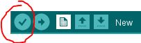
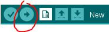
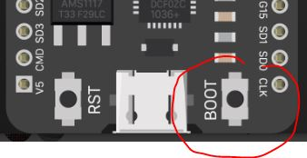

RGB Strip - Coding
Not all electronics have a simple ON/OFF or corralating Widget in Blynk. This is one example that cannot be easily supported with just running Blynk. We will need to add some more complex coding.
RGB Strip API Library
First, let's find a suitable library to support controlling the RGB Strip.
It has some electronic communication protocol that is simple enough, but we won't be coding it from scratch!
In Arduino, go to Tools -> Library Manager and install Adafruit NeoPixel library (latest version):

Test RGB Strip Control
First, let's just make sure that we can control the RGB Strip without Blynk.
Add the following to the top of your basic Blynk sketch:
#include <Adafruit_NeoPixel.h>
Now, let's define our RGB Strip anywhere between that line above and the setup() function:
Adafruit_NeoPixel strip(6, 5, NEO_GRB + NEO_KHZ800);
This defines a 6-LED RGB Strip, contrlled by ESP32's PIN 5.
In Setup() function, add the following code:
// Define red color
uint32_t red = strip.Color(255, 0, 0); // HIGH red, no green, no blue
// Cycle through all 6 LEDs
for(int c=0; c < strip.numPixels(); c += 1) {
// Set pixel 'c' to red
strip.setPixelColor(c, red);
}
// Now show the contents of the different LEDs as defined above
strip.show();
Compile & Upload (see below) to get the LED strip to turn on.
If you can't get your LED's to turn on please make sure the pins are connected properly, the code compiles without errors, and that the upload is successful before getting help.
Intercepting V0 Messages from Blynk
If you managed to control the RGB Strip and turn it some color (you can change the value of the color from red to something else using different RGB values), it's time to ty to control it from Blynk.
We will need to add an intercepting code for when Blynk tries to write some new RGB values to the board:
The code this extra function is as follows:
BLYNK_WRITE(V0)
{
int R = param[0].asInt();
int G = param[1].asInt();
int B = param[2].asInt();
uint32_t color = strip.Color(R,G,B);
for(int c=0; c < strip.numPixels(); c += 1) {
// Set pixel 'c' to color
strip.setPixelColor(c, color);
// Now show the contents of the different LEDs as defined above
strip.show();
}
Compile & Upload
Next, compile the program to make sure you followed the above instructions properly:

It will ask you to save the file if you haven't yet. You can call it whatever you want...
If there are no errors, proceed. If there are errors, see if you can fix them on your own, and if not, call an instructor to help you.
Finally, it's time to upload the program:

IMPORTANT NOTE - BOOT MODE
Every time you Upload a program to the ESP32, you have to click and hold the small Boot button next to the mini-USB connector.

The buttons may be labelled differently on your board, but it should be the same side as shown here.
This puts the board into programming mode.
Hold the button until the Arduino log says it passed the connection part:
Connecting........___ <----
Chip is ESP32-D0WDQ6 (revision 1)
...
<bunch of other logs>
...
Leaving...
Hard resetting via RTS pin...
Test
So now you should be able to change the color of the LEDs on the strip by running your Blynk dasshboard and choosing different colors from the zeRGBa widget!
Use all you've learned to make sure you've done everything right before getting help.